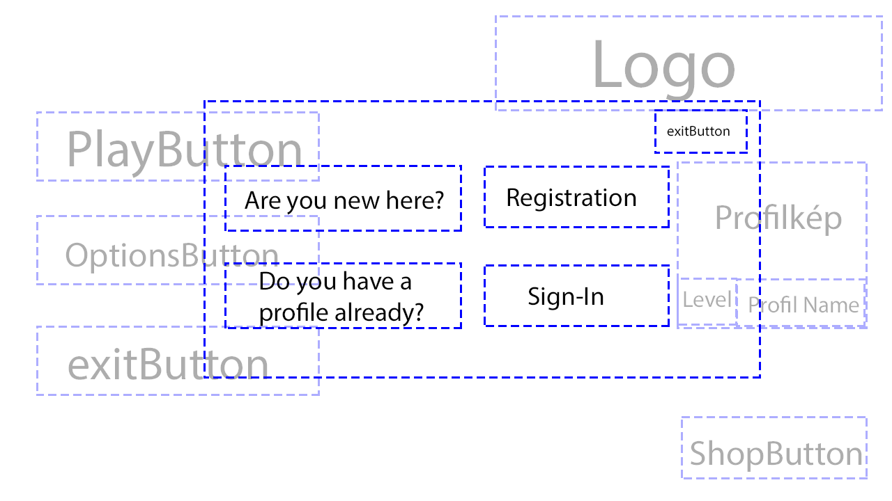

Csoport neve: SpeedCards
Rendszer Tervezés Dokumentum
Gyakorlatvezető:
ÁRVAI LÁSZLÓ
Csoport tagok:
| Baumel Márton | O09CTQ | marcibaumel@gmail.com |
| Korita Zsófia | W63HPU | korita.zsofi12@gmail.com |
| Edl Levente | JEKPUI | husi5644@gmail.com |
| Markó Roland | FRNJTJ | marko.roland.2000@gmail.com |
| Husóczki Dániel | HLO5ZK | husoczkidaniel@gmail.com |
Történet
| Dátum | Verzió | Leírás | Szerző |
|---|---|---|---|
| 2020.11.08 | 1.0 | Dokumentum Létrehozása | Baumel Márton |
| 2020.11.10 | 1.1 | Tartalom feltöltés | Korita Zsófia |
| 2020.11.16 | 1.2 | Tartalom feltöltés | Korita Zsófia |
Tartalomjegyzék
A Rendszer Tervezés tartalmazza az alkalmazásban használt adatbázis tábláinak és a táblák mezőinek, és a táblák kapcsolatainak bővebb kifejtését, és az adatbázis adatmodell diagramjait.
A játékban 3 jól elkülöníthető felület van:
Ha felhasználó elindítja a programot ez lesz az első felület amit a felhasználó látni fog. Itt 3 gomb és egy
profil gomb helyet foglalni. A Play gombbal tudunk belépni a játékba de előtte szükséges a belépés a profilba de
ezt külön jelzi is a program. Az Options gombbal tudjuk beállítani a felbontást és a hangerőt. Az Exit gombbal
tudunk kilépni az alkalmazásból. A Profil gomb a képernyő bal oldalán lesz elérhető, itt látható lesz, hogy
hanyas szintűek vagyunk de ha rányomunk bejön a Profil Management felület.
Ha a Főmenübe rányomunk a Profil gombra bejön a Profil Management felület. Itt leszünk képesek managelni a
profilunkhoz kapcsolódó tevékenységeket: bejelentkezést, regisztrációt és a kijelentkezést.



A sikerült bejelentkezni akkor leszünk képesek elindítani a Play gombbal egy játékot. Ilyenkor a egy 6 felé
tagolt pályát fogunk kapni, de ez szimmetrikusan megegyezik ezért csak a mi szemszögünkből lévő 3 sávot fogom
bemutatni. Az első sáv a kijátszható kártyákat tartalmazza, ezzel a sávval tud interakcióba kerülni a
felhasználó, mellette pedig megtalálható lesz a játékbeli karakterünk aktuális tulajdonsága egy négyzetben
alatta helyezkedik el az aktuális kör befejezésére szolgáló “End Turn” gomb. A következő sáv a légi egységek
vannak és a harmadik sávban helyezkednek el a földi egységek ezekben a sávokban oldalt lehetnek lapok amik
hatást fejthetnek ki később. Ha megnyomjuk az ESC gombot a billentyűzeten akkor egy Options ablak ugrik fel ahol
képesek vagyunk beállítani a játék hangját vagy kiléphetünk a játékba vissza a Főmenübe.


Ezt az adatbázis rendszert MySQL rendszerben fogjuk kivitelezni, ennek eléréséhez pedig PHP MyAdmin felületet fogunk használni.
Azért választottuk a MySQL rendszert mivel többfelhasználós és többszálon futó adatbázis kezelő rendszer és platform független vagyis minden platformon el tudja érni a software az adatok betöltésekor.
Java nyelvből kezelhető a JDBC (Java DataBase Connectivity) segítségével.
A JDBC egy API(Application Programming Interface) amely definiálja az adatbázisok lekérdezéséhez és módosításához szükséges osztályokat és metódusokat.
A MySQL adatbázis eléréséhez azért választottunk PhpMyAdmin felületet mivel ez egy grafikus felület és könnyen átlátható ellentétben a consoleos(Parancssori) felülettel.

Ennek az osztálynak a segítségével hozzuk létre a kapcsolatot az adatbázissal és a szoftver között.
Három darab alosztállyal kezeljük le az egyes táblák és az osztályok közötti